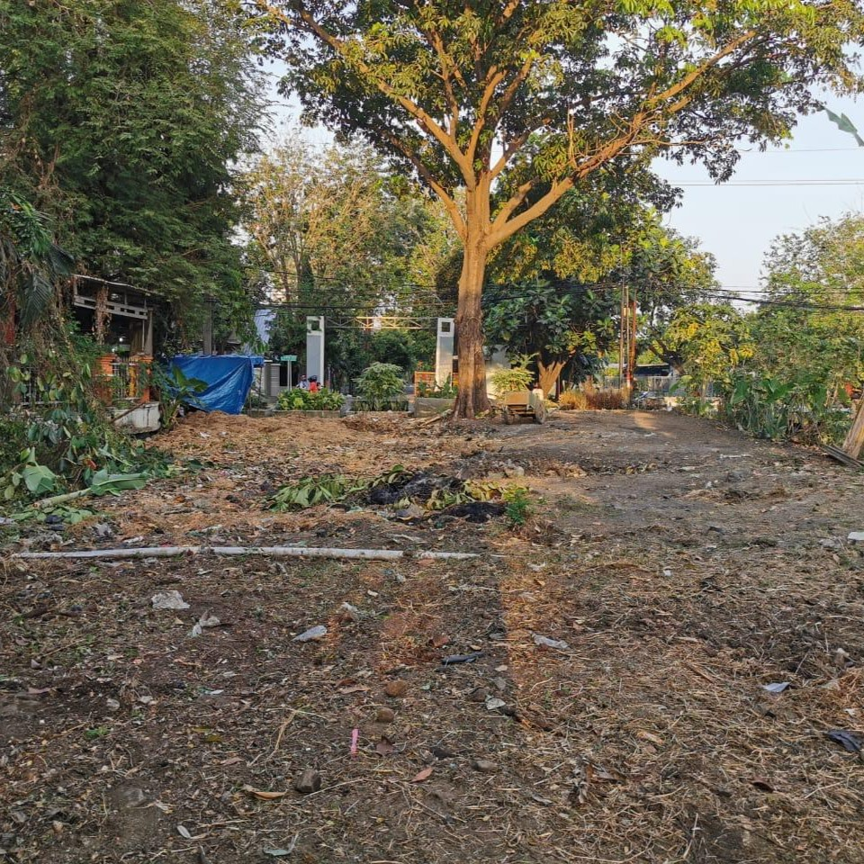
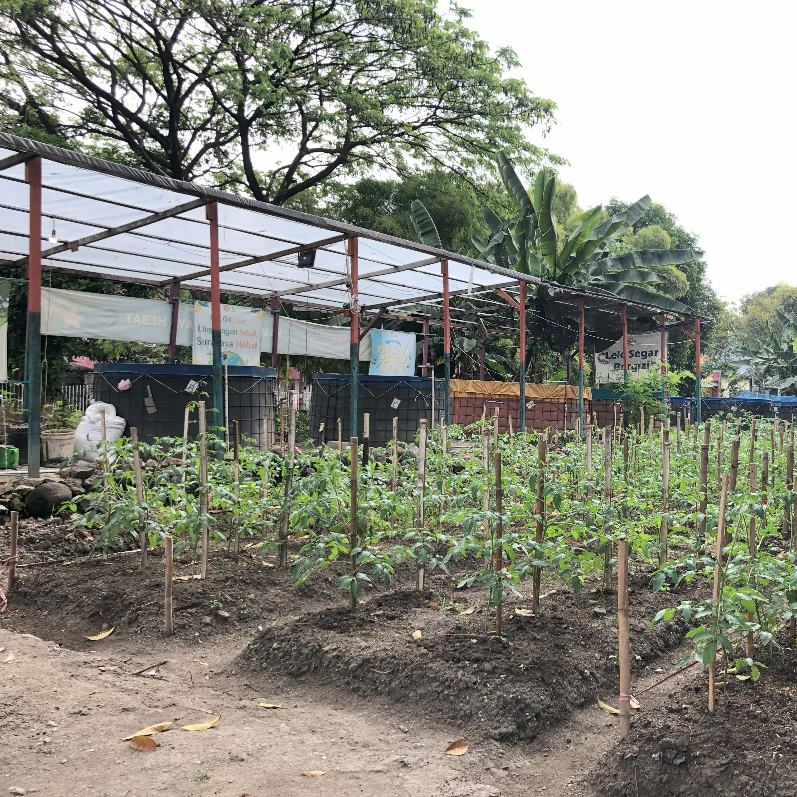

Sejarah Tentang
CAH ANGON
Cah Angon didirikan pada tahun 2023. Awalnya, tempat Cah Angon adalah lahan yang tidak terpakai atau kosong dan dipenuhi tumbuhan ilalang. Lahan yang dimaksud merupakan bagian dari aliran sungai. Pembersihannya dilakukan pada tahun 2022. Awal mula Cah Angon dibentuk karena kondisi lahan yang semrawut. Pada bulan Juli 2022 dilakukan pengerukan sungai, dan tanah hasil kerukan dibuang ke lahan tersebut.
Gambar Sebelum


Kemudian ketua RW dan warga berinisiatif untuk meratakan lahan tersebut dengan bantuan dari pemkot. Tidak lama setelah itu, RW mengajukan pembuatan kolam lele dan mendapatkan dua kolam beserta bibitnya. Tak lama kemudian, RW kembali mendapatkan tambahan kolam lele dan bibit dari kelurahan yang lebih besar. Cah Angon kemudian dikelola oleh Mas Rahmat.
Gambar Sesudah
